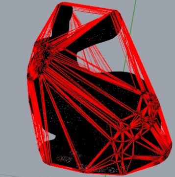
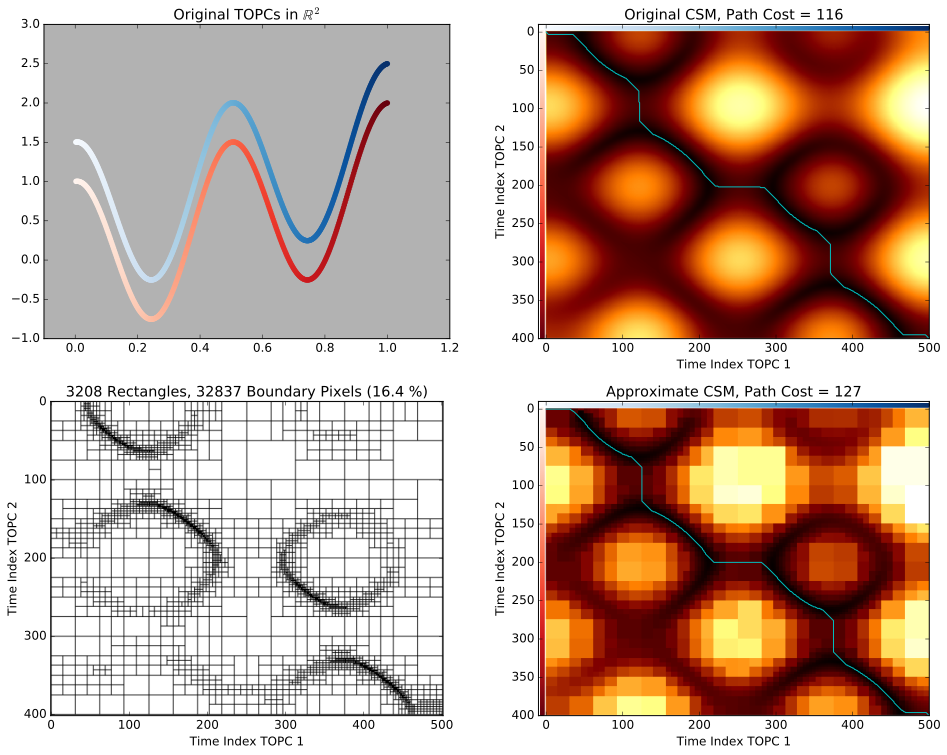
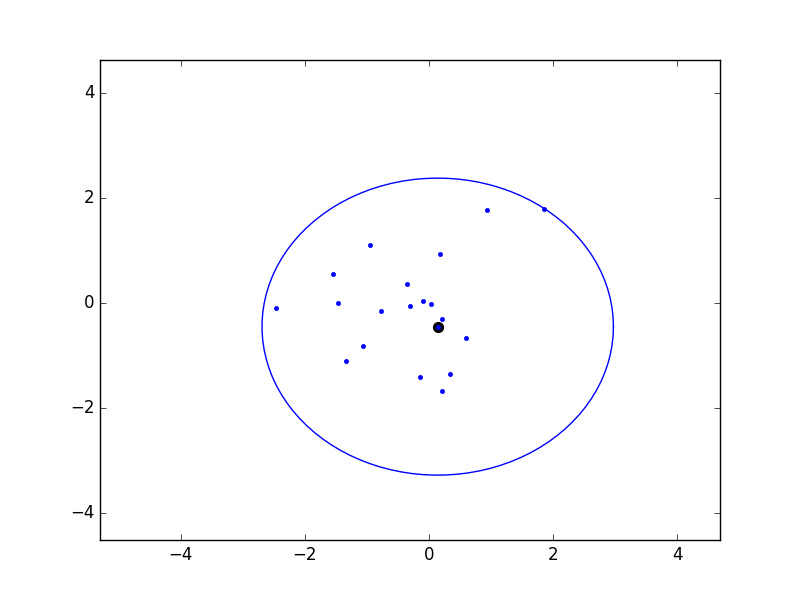
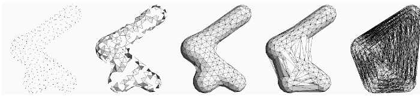

CS 271: Data Structures And Algorithms
Ursinus College, Fall 2022
As stated on the main page, there are two options for a final assessment, and I will provide more details about each one below
Option 1: Mock Coding Interview
A live coding interview, typically an hour in length, is a pretty standard part of a software engineering job these days. The focus is always on implementing algorithms, and this class will have covered the vast majority of the topics that are considered "fair game" for such an interview. The web site interviewing.io provides an excellent resource for this. You should spend some time looking at some of the sample interviews on this page to get an idea of how these go.
The interview we do will be somewhere between 30 and 45 minutes. I'll provide a rubric here as we get closer, but in essence, it is OK for you to make mistakes as you go along, as long as you recognize them and work to fix them. As a rule of thumb, the more talking you do about your thought process, the better.
Option 2: Geometric Algorithm Multimedia Expo
The annual Symposium on Computational Geometry (SOCG) always has a multimedia expo, where people are invited to submit short movies/skits/apps to make an algorithm "come alive." The focus of this conference is on "geometric algorithms," so basically geometry meets CS 271. Algorithms in this area have applications to computer graphics, robotics, video game design, city planning, map making, and beyond.
In this year's call, the official instructions are as follows:
The submission should be related to computational geometry, broadly interpreted, but is otherwise unrestricted: for example, it can illustrate a (new or existing) concept, technique or algorithm from computational geometry, it can explain an application of computational geometry, it can be meant for educational purposes or for entertainment purposes, and so on. The form of media is broad, including algorithm animations, interactive software and games. To showcase the media after the event, for submissions that are not videos, creation of an accompanying webpage or video is encouraged (but not required).
Unlike the coding interview, students may actually work in groups on this project!. Students who go into enough depth with this work may submit their work to next year's conference! This would be particularly good for anyone who's considering applying to grad school. You can a history of all submissions since the 1990s on computational-geometry.org under Multimedia web proceedings
Videos/Skits
One of the videos in last year's multimedia expo was a video on how to make videos (very meta), which can serve as a practical guide for those who want to do a skit or an overview video. Click here to view this video.
Below are two examples of videos from the past two years
Web Apps / Games
For those who want to make an app, I'd highly recommend making a web demo using Javascript. For those who have not used Javascript, it is basically like Java meets Python, so it shouldn't take too long to learn. Here are a few examples from recent conferences
- Spiroplot app
- Dots and polygons
- MatchTheNet
- Geometric Models for Musical Audio Data
- Scissors Congruence (cutting any two polygons with the same area into pieces that can be re-arranged into each other)
- Geometric Spanner Algorithms Visualization
- Interactive Geometric Algorithm Visualization in A Browser
- Quickest Visibility Map Visualization
Ideas of Topics
Anything that combines skills from this class with geometry is fair game, but below are a few topics that would be great for this project
3D KD Trees
There are ideas similar to binary search trees that work for geometric objects. One such data structure, the KD-Tree, is a tree that can be used to quickly find points in a point set. There are some nice interactive demos of KD trees for 2D point sets, such as this one, but I am not aware of any for 3D

|
| Picture of a 3D KD tree, courtesy of Wikimedia commons |
Hamiltonian Cycles in The Space of Binary Trees under Rotation
As shown in this paper, it is possible to enumerate all possible binary trees with a fixed number of leaves by starting with a tree with every branch to the left and performing one rotation at a time, eventually ending up back at the tree with every branch on the left. This has a very interesting geometric interpretation of a hamiltonian cycle on the associahedron.
On the course web page, I show an animation that visits all possible binary trees, but there is sometimes more than one rotation in between adjacent frames

The idea of this project is to create a similar animation that visits all possible binary trees with a fixed number of nodes, but in which . Last spring a student implemented the algorithm on page 19 of this paper in python to equivalently create triangulations of polygons. This semester, I'd like a student to re-implement this in Javascript and show the trees that are generated from the above algorithm. This was just a theoretical paper, and nobody has ever done this in code, so this would be a really cool, novel project bridging math and CS!
Convex Hulls in 3D
A convex hull is a minimum enclosing convex shape of a set of points. It can be thought of as "shrink wrapping" a shape. These structures are ubiquitous in geometric algorithms. Last year, some student groups worked on an app to compute convex hulls of points in 2D (click here to view their app). This year, I'd love to see if a group of students could explore algorithms to create 3D convex hulls with a divide and conquer algorithm, as described in these slides. Below is a picture from those slides of a convex hull of a 3D bunny
Dynamic Time Warping / Discrete Fréchet Distance
Dynamic time warping is an algorithm to align two time series that are warped. Click here for more information on this. In the past, it has been part of CS 271, but it got cut in favor of more graph algorithms.
Regardless, it might be neat to create a skit about dynamic time warping where two people have to hop along some trajectory while minimizing the sum of ropes that they use to connect each other.
There's also a problem known as the Discrete Fréchet Distance which is incredibly similar to DTW, but which tries to minimize the maximum distance between any two points on a warping path, rather than the sum of all distances. A "decision version" of this problem could be to choose a rope of a certain length and see if that rope is long enough for people to hold onto the two ends of that rope while jumping from one point to the next.
Below is a "frog hopping" animation of Discrete Fréchet distance, courtesy of Omrit Filtser

Linearithmic Approximations of Dynamic Time Warping
One of my favorite recent papers in computational geometry shows how it's possible to create an O(N log N) approximation algorithm for dynamic time warping. Click here to see this paper. There is C++ code here to do this (which I forked from the first author), but it might be nice to translate it into Python or Javascript to make it more usable. Below is a figure of this algorithm that I made using the C++ code:
K-Center Clustering And Greedy Permutations
There is a problem known as K-Center clustering that is stated as follow: given a set of N points X, find K points Y so that the maximum distance of each point in X to its closest point in Y is minimized. Unfortunately, this problem is NP-hard, which means we will probably not be able to find a polynomial time algorithm to solve it. However, there is a very simple 2-approximation known as a Greedy K-Center (sometimes "farthest points sampling") which can be computed in O(KN) time. The idea is very simple:
- Pick a random point x1 ∈ X
- for k = 2 to N
- Let xk be the point in X whose closest distance to the points chosen so far is maximized
- Let λk-1 be this maximum distance (we'll use this in a moment)
There's another really nice property of a greedy permutation: if we place balls of radius λk-1 around the first k points chosen, then the union of these balls covers all points. Below is an example that I coded up in 2D:
Click here to view slides on why this is a 2-approximation of K-center clustering.
We can keep going to let K = N to come up with what's known as a Greedy Permutaiton of the entire dataset. Each prefix of length K is a 2-approximation of K-centers for all K, and it only takes O(N2) to compute all of them. In practice, though, we might want to do something even faster. A recent paper by Don Sheehy (the author of the textbook we're using) shows how to do this in O(N log Δ) time, where Δ is the ratio of the furthest distance to the smallest distance between all pairs of points. Click here to view this paper.
Students on this paper might try to create a Javascript app to implement the original greedy k-center, as well as Sheehy's version. They also might want to run some experiments comparing the two on real datasets.
Sonification of Alpha Filtrations
3D range scanners take a 3D picture of an environment and return a bunch of point samples in 3D space. But what they're really sampling is some surface. One way to turn these points into a surface is by connecting them with triangles into a so-called triangle mesh. There is an elegant geometric construction known as alpha shapes which can be used to figure out which triangles (or line segments in 2D) to introduce to connect points.
|  |
| Picture courtesy of Teichmann and Capps |
One parameter that's open in alpha shapes, though, is the radius to use. As can be seen in the picture above, radii that are too small don't cover all of the points, while radii that are too large obscure details. There is a whole field known as topological data analysis devoted to finding the correct scale of algorithms like alpha shapes by devising something called a "filtration," which tries radii over many scales and finds which ones lead to the creation and collapse of "topological features" (loops, voids, tunnels, etc). Below is an animation I made of an alpha filtration on a circle and on a snowman using code at https://github.com/ctralie/AlphaAnim


What I'd like to see is a "sonification" of these filtrations. Every time an edge is added, it should make one sound. Every time a triangle is added, it should make another sound. And every time a topological feature is created or is destroyed, other sounds should be made, with loudness proportional to how important those features were. A student last year started this in python, but there's more to be done, and I'd like to see a Javascript version that's easier to share. It could be really fun to refine and to be creative with this.
Grading Rubric
| 65% | Technical refinement:
|
| 10% | Clarity: How clear is your video or app to a general audience that hasn't necessarily taken this class? |
| 15% | Aesthetics And Code Quality: If you made an app or a video, are they smooth and polished for the viewer / interactor? Is your code readable and in good style? |
| 10% | Making It Your Own: How much did you do to refine this project and to make it your own? Did you put any unique twists on it that weren't suggested by the instructor? |